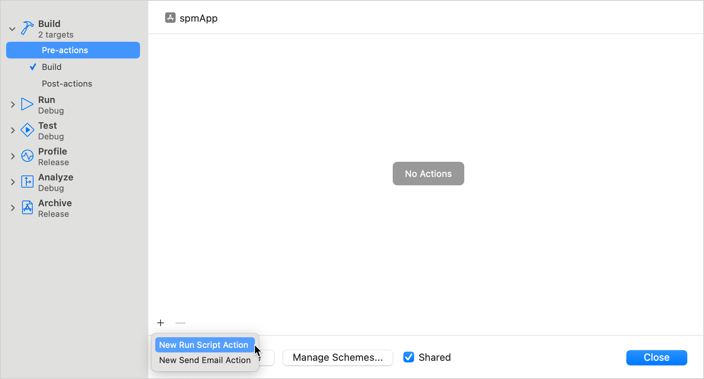

In this tutorial, you'll learn how to integrate a Kotlin framework from a Kotlin Multiplatform project into a local package using the Swift package manager (SPM).
To set up the integration, you'll add a special script that uses the embedAndSignAppleFrameworkForXcode Gradle task as a pre-action in your project's build settings. To see the changes made in common code reflected in your Xcode project, you'll only need to rebuild the Kotlin Multiplatform project.
This way, you can easily use Kotlin code in local Swift packages, compared to a regular direct integration method, that adds the script to the build phase and requires rebuilding both the Kotlin Multiplatform and the iOS project to get the changes from the common code.
Set up the project
The feature is available starting with Kotlin 2.0.0.
The tutorial assumes that your project is using direct integration approach with the embedAndSignAppleFrameworkForXcode task in the project's build phase. If you're connecting a Kotlin framework through CocoaPods plugin or through Swift package with binaryTarget, migrate first.
Migrate from SPM binaryTarget integration
To migrate from the SPM integration with binaryTarget:
In Xcode, clean build directories using Product | Clean Build Folder or with the Cmd + Shift + K shortcut.
In every Package.swift file, remove both dependencies to the package with a Kotlin framework inside and target dependencies to the products.
Migrate from the CocoaPods plugin
To migrate from the CocoaPods plugin:
In Xcode, clean build directories using Product | Clean Build Folder or with the Cmd + Shift + K shortcut.
In the directory with Podfile, run the following command:
pod deintegrate
Remove the cocoapods {} block from your build.gradle(.kts) files.
Delete the .podspec and Podfile files.
Connect the framework to your project
To be able to use Kotlin code in a local Swift package, connect the Kotlin framework generated from the multiplatform project to your Xcode project:
In Xcode, go to Product | Scheme | Edit scheme or click the scheme icon in the top bar and select Edit scheme:
Select the Build | Pre-actions item, then click + | New Run Script Action:

Adjust the following script and add it as an action:
cd "<Path to the root of the multiplatform project>"
./gradlew :<Shared module name>:embedAndSignAppleFrameworkForXcode
In the cd command, specify the path to the root of your Kotlin Multiplatform project, for example, $SRCROOT/...
In the ./gradlew command, specify the name of the shared module, for example, :shared or :composeApp.
Choose your app's target in the Provide build settings from section:
You can now import the shared module into your local Swift package and use Kotlin code.
In Xcode, navigate to your local Swift package and define a function with a module import, for example:
Build the project in Xcode. If everything is set up correctly, the project build will be successful.
There are a couple more factors worth considering:
If you have a custom build configuration that is different from the default Debug or Release, on the Build Settings tab, add the KOTLIN_FRAMEWORK_BUILD_TYPE setting under User-Defined and set it to Debug or Release.
If you encounter an error with script sandboxing, open the iOS project settings by double-clicking the project name, then on the Build Settings tab, disable the User Script Sandboxing under Build Options.